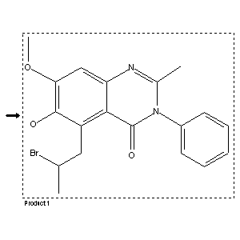

|  |
| FA | RX(1); FLST(1); RX(1) |
Reaction (1 of 1)
| Reaction ID | 6129349 |
| Product BRN | 838870 |
| Product | 5-(2-bromo-propyl)-6-hydroxy-7-methoxy-2-methyl-3-phenyl-3H-quinazolin-4-one |
| No. of Reaction Details | 1 |
Reaction Details (1 of 1)
| Reaction Classification | Preparation (half reaction) |
| Citation Pointer | 169784; Journal; Sinha,S.K.P.; Chaudhury,D.N.; JICSAH; J.Indian Chem.Soc.; EN; 47; 1970; 925-930; |
Reference (1 of 1)
| Citation Number | 169784 |
| Document Type | Journal |
| Authors | Sinha,S.K.P.; Chaudhury,D.N. |
| CODEN | JICSAH |
| Journal Title | J.Indian Chem.Soc. |
| Language Code | EN |
| (Series) Volume | 47 |
| Publication Year | 1970 |
| Page | 925-930 |